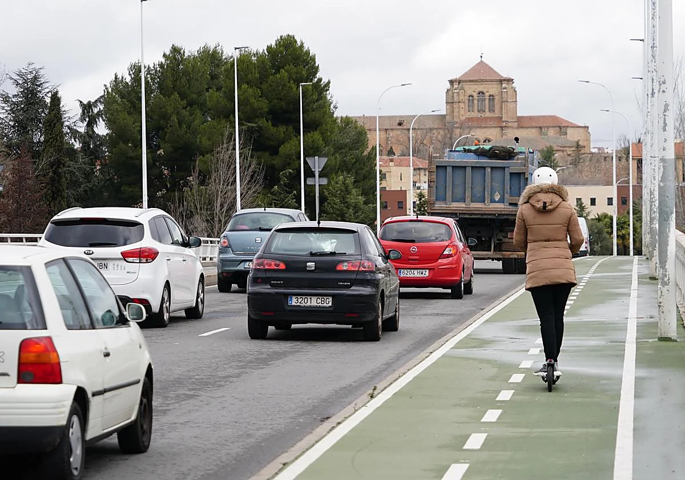

Regulación de Patinetes Eléctricos en Salamanca

El uso de Vehículos de Movilidad Personal (VMP), comúnmente conocidos como patinetes eléctricos, ha crecido en la capital del Tormes. Sin embargo, a diferencia del consolidado sistema municipal de bicicletas, en Salamanca no existe ningún sistema público ni privado de préstamo de patinetes. Quien desee moverse en este medio de transporte, deberá utilizar un vehículo en propiedad.
Normativa de Circulación
La regulación local es muy clara para garantizar la convivencia en una ciudad con un casco histórico peatonal tan transitado. Los patinetes eléctricos tienen totalmente prohibido circular por las aceras y áreas exclusivas para peatones. Deben utilizar el carril bici siempre que sea posible o, en su defecto, circular por la calzada respetando estrictamente los límites de velocidad marcados por la normativa de tráfico urbano.
El "espejismo" del aparcamiento
Aparcar el patinete con seguridad se ha convertido en el mayor reto para los usuarios. A simple vista, podría parecer que hay "demasiados" sitios habilitados en la calle para anclar vehículos ligeros, pero la realidad es muy distinta: absolutamente todos esos aparcamientos son exclusivos para bicicletas. No existe ni una sola estructura diseñada o reservada para patinetes en toda la ciudad.
Para colmo, si analizamos la situación a fondo, los aparcabicis existentes también resultan escasos en las zonas de mayor demanda, como los alrededores de las facultades universitarias o el centro histórico. Esto obliga a los usuarios de patinetes a improvisar o arriesgarse a multas al no disponer de infraestructuras adaptadas a su vehículo.